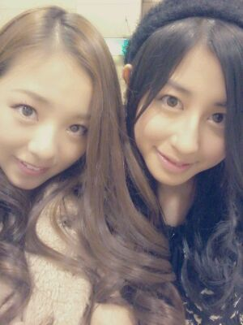

| 2012/10 13 Sat | 川村真洋 まいやんろってぃー♪楽しむでし っ! *゜・*・゜ |
ほっほい♪
大阪出身 17才の
ろってぃー♪です((*・ω・) /
明日は まちにまった
千葉幕張メッセでの
全国握手会です*^^*
あ〜、前回の全握が
終わった時から、
『次の握手会いつやいつや´・ω?』
ゆーてた位
本当 楽しみにしてました♪
まひろは まいやん♪とペア
なのです*・ω・*
全握で まいやん♪となるのは
初めてっ^^))
わぁ〜い まいやんだぁー *^^*
初めましての方♪も
ろってぃ〜むの方も
よろしくお願いします(*・ω・)♪
何か 色々お話したいなぁ〜 ))
まひろ クールに
思われる時あるけれども、
もうしゃべってもーたら
クールとかゆう言葉が
一切似合わない人なんで、
何でも お話しましょっ・∀・))
秋の食べ物とかで
『これはうまいぜっ☆!』
とかゆうオススメな
食べ物とか教えて
ほしいなぁ〜*^^*
あとさあ、
よくツアーとか
握手会,イベント,ライブ等で
地方行かせてもらうんですけど
地方から来ていただく人とか
例えば
『和歌山だと和歌山ラーメン
食べな食べな=∀=)V☆』
とか
ん〜 大阪だったら あれだ。
お好み焼きだろう`・ω・))?
ちなみにネギ焼きは
本当 おいしいんですっ(〃〜〃)
この前 メンバーと
「ネギ焼き」ってゆうお店に
行ったんですけど
そこのネギ焼きは
めっちゃくちゃ美味しかったです
(〃ー、〃)わら
とか 色んな地方での
○○来た時は
あそこ行きよ。とか
是非教えてほしいなぁ〜(⌒‐⌒)
...秋のカキが大好き。
あっ、東京も知りたいっ>ω<
東京のいい所
もっと知らなくっちゃ*><*。
他にも色々知りたいし
皆様のこととかも
知りたいし
何か、皆様の
はまってることとか
趣味とかさあ
めっちゃ聞きたいなあ、
全然 変な質問とかも
待ってますよん・∀・笑
いぇ〜い ))) ♪
あ〜 楽しみ。
第三レーンで待ってます*・∀・*!!
んっ!!
そーだそーだ★☆★
まひろ 昨日
富士急ハイランドに
行ってきたよ`・∀・☆ドヤ。笑
あのね、
乃木坂46のホームページで
見れる
『乃木坂ってここ★!』とゆう
番組の ロケだよっ・∀・)))
ゆっっとっけど =ω=......
絶叫マシーン☆´ε`...
・・・・・
最高やったわっ>∀<)))笑
あのねえ、
ヘルメットかぶって
皆の顔を 下からのアングルで
撮ったんですけど、
あ〜
自分らも本間楽しみやなぁ、
...
すごい顔になってると
思います *・ω・*
うんっ いぇい。
すさまじいんだろうなぁ〜 *^^*笑
是非見てくださいねん♪
本当 叫び過ぎたんだけど
明日大丈夫かなあ=・ω・=？笑
あw
そしたら 明日待ってますね*^^*
皆様 ライブに握手会,
是非 一緒に楽しみましょうっ!
おやすみなさい〃∀〃))のし
ちはるんと ,,, ♪

ちはるは 歳をとる度に
更に更に美人になってくよ
きっと。 (⌒‐⌒)